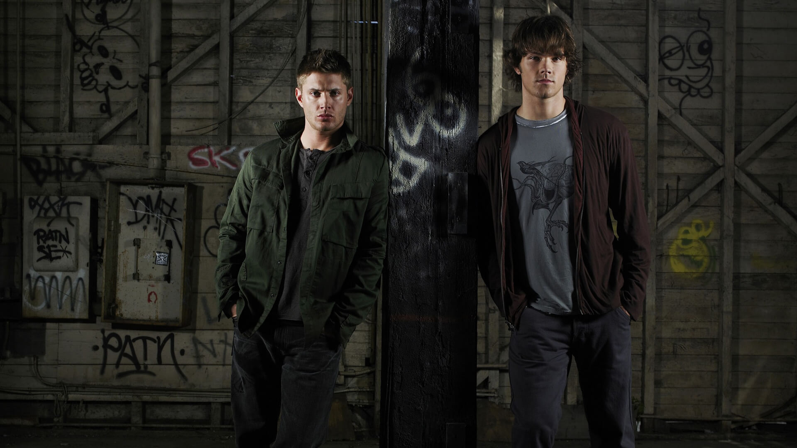
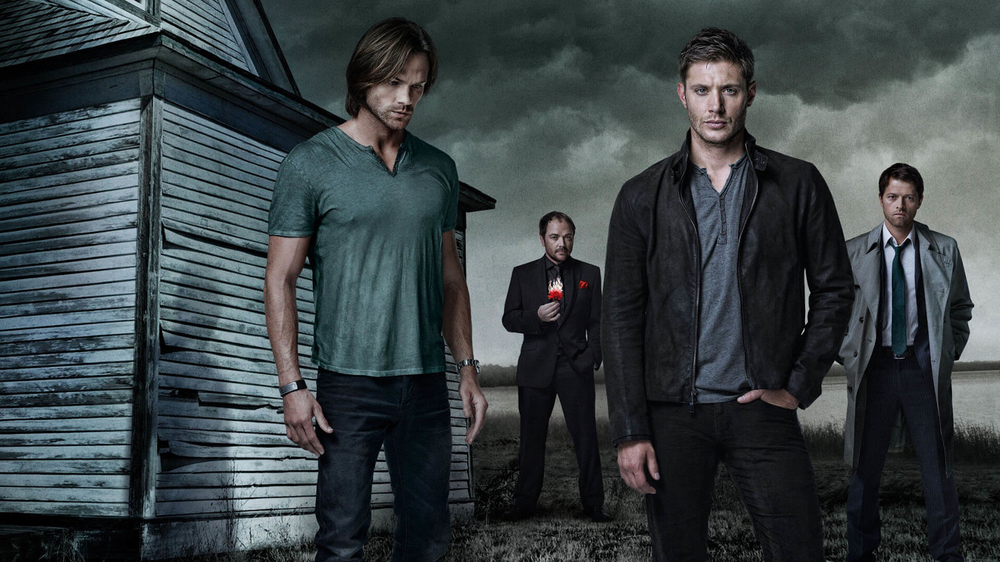
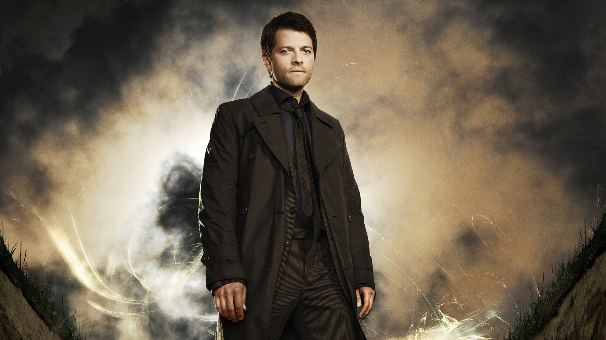
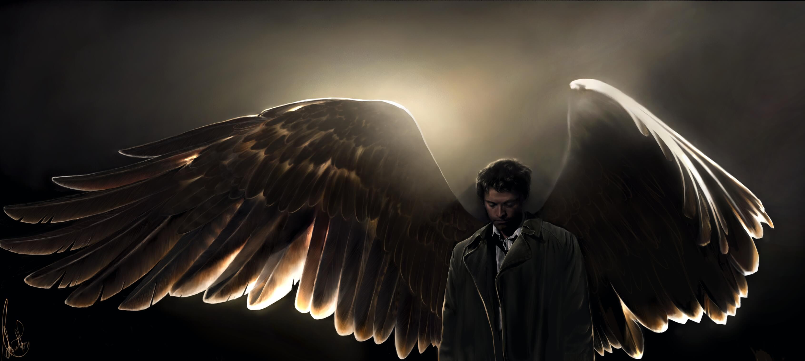
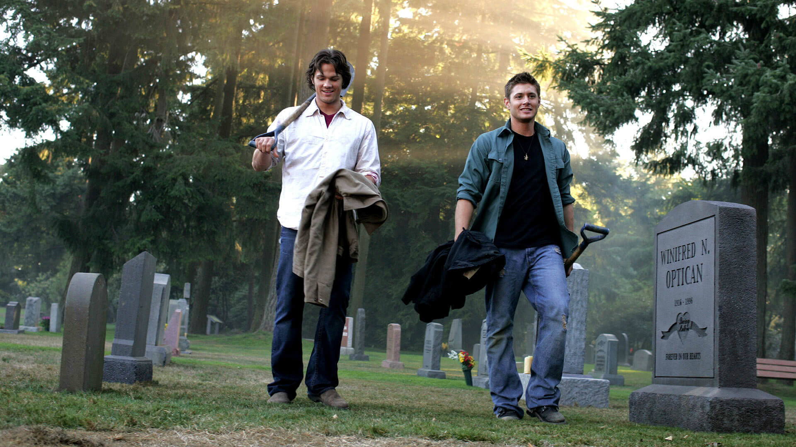

Supernatural é uma série distópica da HBO e Amazon Prime, Sam Winchester tentava escapar do próprio passsado. Após a misteriosa morte de mãe, o pai de Sam passou a procurar vingança contra as forças do mal que mataram a esposa, destruindo qualquer ser maligno que cruze o seu caminho. Ao contrário de Sam, Dean, seu irmão mais velho, sempre quis seguir os passos do pai. Sam parece determinado a se livrar do "negócio da família", mas sua vida está prestes a tomar um rumo indesejado quando não lhe resta outra escolha a não ser se unir ao irmão.